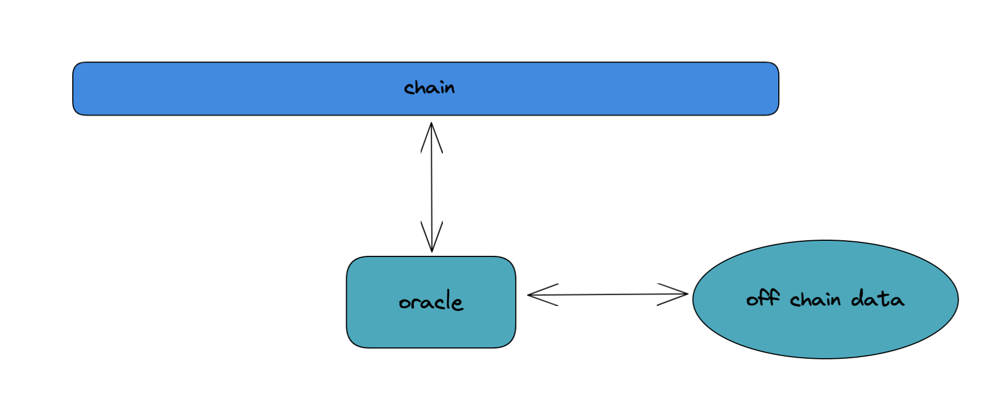
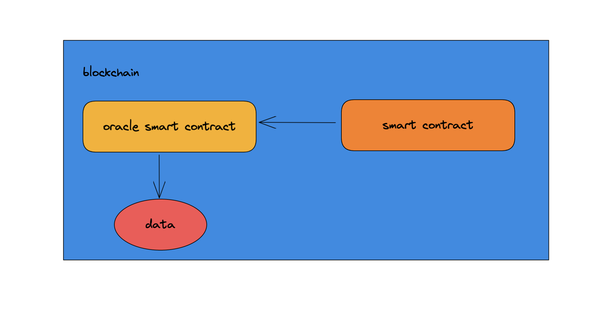
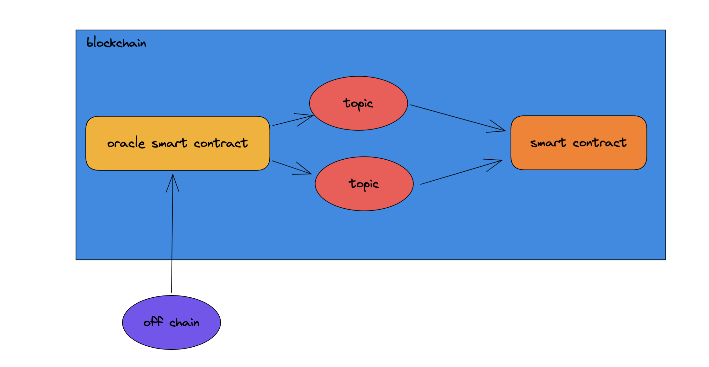
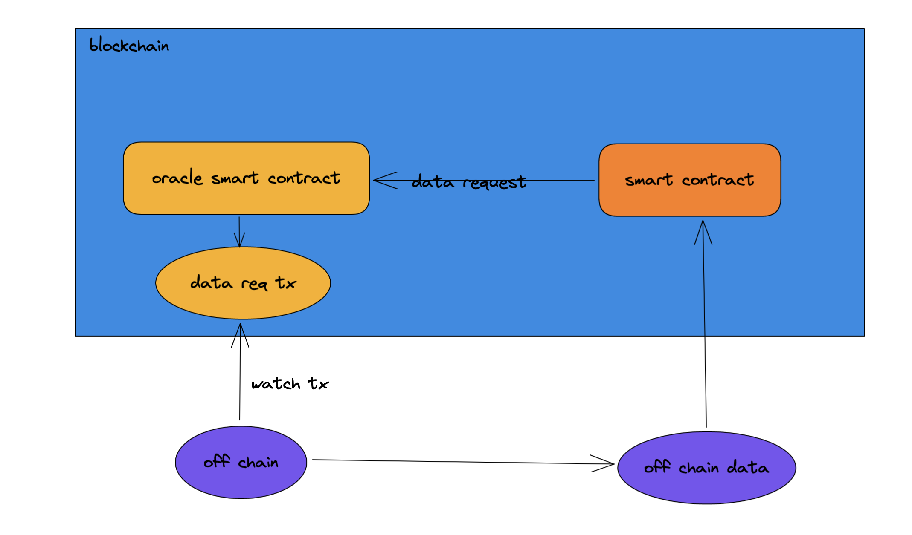

预言机不预测
以太坊网络出现之后，基于智能合约来实现的场景越来越多，Defi、链游、NFT。但是这些场景都会一个问题，只在链上这个封闭的世界运行，无法与真实的世界沟通。所谓流水不腐，只有打通了与现实世界的桥梁。区块链网络的生态才能更加完善。
讨论一个强需求的场景，比如某个人在以太网上有很多的资产。假设有一天这个人因为意外去世，那么他在链上的资产将会被完全锁死。如果有一种方式，可以设置一个类似遗嘱的合约，在他去世之后可以把他相关的资产都转移到一个地址，就可以解决这个问题。但这里有一个关键的问题需要解决，智能合约怎么获取他是否死亡的信息呢？
1. 为什么需要预言机
区块链是一个完全封闭的环境，在智能合约执行的过程中，不能引入不确定性，也就是说不能出现网络访问，因为网络访问是不确定的。
如果智能合约的执行结果不是确定的，那么就有可能造成节点之间数据的不同步。但是随着智能合约不断的发展，链需要从真实的实际去获取信息。
这些信息有可能是币价信息、股价信息、天气、真正的随机数等等。而智能合约获取这些数据的时候，需要通过确定性的方法，对于每一次数据的获取，所有节点获取到的数据是一致的。
为了达到这个目的，就需要预言机（oracle），这里的预言机不会预测任何事情，只是会将现实世界的数据传输到链上，供链上的智能合约使用。

2. 预言机的几种实现方法
预言机的实现原理其实都类似，一般来说会包含三个步骤：
- 从链外的数据源搜集数据
- 将数据签名传输到区块链网络中
- 智能合约获取数据，在合约中使用
因为智能合约本身是无法访问网络的，只能让预言机通过本地读取的方式来获取数据。而预言机服务本身有一部分也是区块链网络中的智能合约，这些智能合约会与链外的预言机网络进行交互。
预言机提供的数据获取方法大体上可以分成三类：
2.1 直接读取
这种方式通常用来获取那些不会改变的数据，比如某个人的生日、学历证明、出生地等等信息，这些信息确定后应该就不会再改变了。这类的数据通常只需要写到链上一次，然后就可以供其他的合约使用了。这些数据通常不会直接写到链上，而是会通过加盐再进行 hash 运算，最后只存储一个 hash 值。

这样做的原因有两个，一方面，可以减少数据的存储量，另外，出于隐私的保护，毕竟一些数据上链之后，就会永久存在了。
这样的好处在于，不需要合约之间进行频繁的交互，既节约时间，也节省成本。但只有一些特定的数据能够采用这种方式。
2.2 发布与订阅
很多数据并不一成不变的，比如天气信息、股票信息、币价信息，都在不断的变化，因此预言机网络需要不断的到链上来更新数据，每一类数据都可以看做是一个主体。而对某些数据感兴趣的智能合约则会订阅这些主题，在需要这些数据的时候来取。
还有一些合约可能会去监控这些数据的变化，那就需要不断的来轮询订阅的数据主题，这样可能会有比较高的成本（数据的轮询也是在运行代码，智能合约只要运行，就会产生成本）。

2.3 请求与响应
这也是获取数据最复杂的一种方式，这种方式用于获取一个独一无二的数据，或者数据量太大，无法全部写到链上。
比如常见的获取随机数。在智能合约中获取不到真正的随机数，需要从链外去获取。
这种模式中，预言机会接收其他合约的数据查询请求，然后预言机网络监听区块链网络相关的交易，如果发现数据请求，就会检查请求，比如是否已经付款。确认无误之后，就会将数据回调给请求数据的智能合约。

3. 预言机的挑战
预言机的最大挑战在于，怎么确保预言机提供的数据是可靠的。
从这个角度上来说，预言机可以分为两类，一类是中心化的预言机。我们通常会假设这个预言机不会造假，比如某个政府部门、大学等等。中心化的预言机会从两个方面来保证数据的可靠性。一方面通过签名来保证数据没有被篡改。另外一方面会提供一个可信的执行环境。
但是这样并不足以解决全部的问题，因为这些数据都需要信赖一些机构，没有办法保证这些机构不会造假，而且中心化的预言机容易出现故障，一旦出现故障，对链上的交易会产生很大的影响。这类预言机的代表是 Oraclize。
而以 Chainlink 为代表的去中心化预言机提供了另外一种解决方案。Chainlink 将数据的提供方组合起来，通过一套评价体系去给各个数据提供方打分，最后形成一个去中心化的预言机网络。
Chainlink 由声誉合约、订单匹配合约、数据汇总合约以及数据提供者的注册表构成。其中声誉合约用来维护数据提供者的表现。订单合约会从声誉合约的预言机中选择数据提供者。数据汇总合约最后会汇总计算得到的数据，并且会把结果返回给声誉合约。
通过这样的方式，chainlink 构建了一个去分布式预言机网络，解决了单点问题，也一定程度方防止了中心化机构数据造假的问题。
当前的 chainlink 还远没有达到完美，预言机的完善还有很长的路要走。
文 / Rayjun